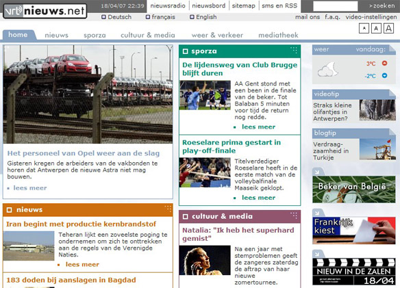

MEDIA
use the arrow keys to navigate; press space for slide overviewMEDIA
Images
img
-
The basic way to include an image, is with the HTML <img> tag:
<img src="img/06_objects/photo.jpg" alt="picture of my brothers">- the
altattribute is required for the vision-impaired - provide a relevant description, not "IMG_20190605_175721.jpg" and alike
- the
Figure
-
If you wish to group an image with a caption, you can use
<figure>and<figcaption>:<figure> <img src="img/06_objects/photo.jpg" alt="picture of my two brothers"> <figcaption>picture of my two brothers</figcaption> </figure> -
It may also contain multiple images:
<figure> <img src="img/06_objects/horseA.jpg" alt="drawing step1"> <img src="img/06_objects/horseB.jpg" alt="drawing step2"> <img src="img/06_objects/horseC.jpg" alt="drawing step3"> <figcaption>how to draw a horse</figcaption> </figure>
Actually a figure can also contain video, or in fact anything be used for anything that can be placed outside the main text. Literally from the W3C:
The figure element represents a unit of content, optionally with a caption, that is self-contained, that is typically referenced as a single unit from the main flow of the document, and that can be moved away from the main flow of the document without affecting the document’s meaning.
picture
-
Use the <picture> if you wish to provide multiple sources for different media. The browser will choose the best match.
<picture> <source media="(min-width: 800px)" srcset="img/pink_flowers.jpg"> <source media="(min-width: 600px)" srcset="img/white_flower.jpg"> <img src="img/orange_flowers.jpg" alt="Flowers"> </picture>- it contains one or more <source> elements and a default <img> element
- this allows you to serve different images for different media
- you can specify device width, orientation, media type...
Design or content? (1)
- Caution! Purely design images should be inserted with CSS, not with HTML
-
These images are content, not design, and should be coded in HTML:
- photo's illustrating an article
- logo's of other companies
- banners
- ...
-
These images are design, not content, and should be ignored (coded in CSS):
- graphic buttons
- icon images
- background images
- ...
Design or content? (2)
Identify which images are design and which are content:
Scalable Vector Graphics
- SVG (Scalable Vector Graphics) is an image format that isn't bitmapped like jpg or png, i.e. with pixels, but vectorized, i.e. with curves and fills
- SVG images remain razor sharp, no matter how much you scale them
-
Designers usually create logos, icons etc. with Adobe Illustrator or alike, in a format that can easily be exported to SVG. Use them like any other image:
<img src="img/06_objects/svg-logo.svg" alt="SVG logo">

[Inline SVG]
-
You can also theoretically create your own SVG (also check the famous tiger or trazy text examples):
<svg height="150"> <defs> <linearGradient id="grad1" x1="0%" y1="0%" x2="100%" y2="0%"> <stop offset="0%" style="stop-color:rgb(255,255,0);stop-opacity:1" /> <stop offset="100%" style="stop-color:rgb(255,0,0);stop-opacity:1" /> </linearGradient> </defs> <ellipse cx="200" cy="60" rx="85" ry="55" fill="url(#grad1)" onclick="alert('hello');"/> <text fill="#ffffff" font-size="45" x="155" y="75">SVG</text> </svg>
{kind=link}
{kind=link}
Tip: you can edit the numbers above by clicking them and using the up and down keys
[SVG filtering demo]
-
Just to show you how endless the possibilities of SVG are, a demo that converts any image to duotone (don't worry too much about the exact code; you'll learn more about it later):
<!DOCTYPE html> <html lang="en"> <head> <meta charset="UTF-8"> <title>filter with SVG</title> <style> html, body { height: 100%; margin: 0; overflow: hidden; } body { position: relative; } #controls { position: absolute; left: 10px; top: 10px; border: 2px ridge; } #duotone { width: 100%; height: 100%; background-position: center; background-repeat:no-repeat; background-size: cover; } svg { color-interpolation-filters:sRGB; } </style> </head> <body> <svg width="1024" height="640" viewBox="0 0 1024 640" id="duotone" preserveAspectRatio="xMidYMid slice"> <defs> <filter id="duotone-filter"> <feColorMatrix type="matrix" values="1 0 0 0 0 0 1 0 0 0 0 0 1 0 0 0 0 0 1 0"/> </filter> </defs> <image width="1024" height="640" filter="url(#duotone-filter)" xlink:href="img/kanye-west.jpg"/> </svg> <div id="controls"> <input type="color" id="color1" value="#8a702d" /> <input type="color" id="color2" value="#19264f" /> </div> <script> // converts #hex to array of rgb values function hexToRgb(hex) { var result = /^#?([a-f\d]{2})([a-f\d]{2})([a-f\d]{2})$/i.exec(hex); return result ? [ parseInt(result[1], 16), // R parseInt(result[2], 16), // G parseInt(result[3], 16) // B ] : null; } // calculates filter matrix for two colors function convertToDueTone(color1, color2) { var matrix = document.querySelector('feColorMatrix'); var value = [ [color1[0]/256 - color2[0]/256, 0, 0, 0, color2[0]/256], [color1[1]/256 - color2[1]/256, 0, 0, 0, color2[1]/256], [color1[2]/256 - color2[2]/256, 0, 0, 0, color2[2]/256], [0, 0, 0, 1, 0] ]; matrix.setAttribute('values', value.join(' ')); } // init var inpColor1 = document.getElementById('color1'); var inpColor2 = document.getElementById('color2'); convertToDueTone(hexToRgb(inpColor1.value), hexToRgb(inpColor2.value)); // bind color picker change events document.getElementById('color1').addEventListener('change', function() { convertToDueTone(hexToRgb(inpColor1.value), hexToRgb(inpColor2.value)); }) document.getElementById('color2').addEventListener('change', function() { convertToDueTone(hexToRgb(inpColor1.value), hexToRgb(inpColor2.value)); }) </script> </body> </html>
MEDIA
Audio & video
Audio and video in HTML
-
HTML5 provides the
<audio>and<video>tags<audio src="media/paoloconte.mp3" controls width="670" style="border: solid 3px black; margin:200"> Your browser dows not support the audio tag </audio><video src="media/tango.mp4" controls poster="img/meloYBratt.jpg" width="320" height="240"> Your browser dows not support the video tag </video>- if the tag isn't supported, the nested text is shown
- usually it's better to upload your sound or video on services like Youtube, Vimeo or Soundcloud, and embed it from there, see this slide
multiple sources
-
Just like with the <picture> element for images, you can define multiple sources for different systems:
<video poster="img/poster.jpg"> <source src="media/video_small.mp4" type="video/mp4" media="handheld"> <source src="media/video.mp4" type="video/mp4"> <source src="media/video.ogv" type="video/ogg; codecs=theora, vorbis"> </video> <audio> <source src="media/music.oga" type="audio/ogg"> <source src="media/music.mp3" type="audio/mpeg"> </audio> -
major media formats (but more exist):
- video: mp4, ogg, webm
- audio: mp3, ogg, webm, wav
- picture: jpg, png, gif, webp, svg
[Compatibility issues]
-
Compatibility problems:
- Firefox doesn't support mp3/aac/mp4 (patents!)
- IE doesn't support oga/ogv/wav/webm
- Safari doesn't support oga/ogv/webm
-
Several problems remain unsolved today:
- no single format supported by all major browsers
- <audio> and <video> elements support still has bugs in some browsers
- Flash alternatives only work on Flash-supported devices
-
Solutions:
- use a specalized media library like mediaElement
- or, upload your video to Youtube and embed the code from there
[with Javascript]
-
Build custom controls with Javascript:
<!DOCTYPE html> <html lang="en"> <head> <title> HTML5 testpage </title> <meta charset="utf-8"> <script> window.onload = function() { var video = document.getElementById("video"); video.controls = false; document.getElementById("lnkPlay").onclick = function() { if (video.paused) video.play(); else video.pause(); return false; } document.getElementById("lnkMute").onclick = function() { if (video.volume > 0) video.volume = 0; else video.volume = 1; return false; } document.getElementById("inpSeek").onchange = function() { video.currentTime = this.value; } } </script> </head> <body> <video src="media/tango.mp4" poster="img/meloYBratt.jpg" width="320" height="240" id="video" controls> Your browser dows not support the video tag </video> <nav id="myControls"> <a href="#" id="lnkPlay">play</a> <a href="#" id="lnkMute">mute</a> <input type="range" min="0" max="211" value="0" id="inpSeek" > </nav> </body> </html>
[with CSS]
-
Even styling with CSS is possible:
#testvideo { transform: rotateZ(5deg); -webkit-box-shadow: rgba(0, 0, 128, 0.25) 10px 10px 15px #990; }<video src="media/tango.mp4" controls poster="img/meloYBratt.jpg" width="360" height="240" id="testvideo"> Your browser dows not support the video tag </video> -
→ you could even use a video as a background
→ but: background video has become a terrible design cliché, really
MEDIA
Embedding
Youtube videos
-
Using
<audio>and<video>directly in HTML has two major problems:- audio and (especially) video files are usually too large to host locally
- there are a lot of format to choose from (.mp4, .mov, ., .webm...) but practically none is supported by all browsers
-
The alternative is simple: upload the audio or video on services like Youtube or Soundcloud, and copy paste the <iframe> embed code to your HTML file:

Google maps
-
To include a basic Google map in your page, click "share" and copy paste the <iframe> embed code to your HTML file:

Other
- Many other sites allow you to embed their code, like Google Trends: